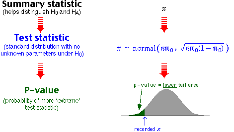

Normal approximation
When the sample size, n, is large, a normal distribution may be used as an approximation to the binomial.
Approximate p-value
We again test the hypotheses
H0 : π = π0
HA : π < π0
If n is large, the approximate normal distribution for x can be used to obtain the p-value for the test.

Home-based businesses owned by women
A study found that 369 out of 899 sampled home-based businesses were owned by women. Are they less likely to be owned by females than by males? The hypotheses are...
H0 : π = 0.5
HA : π < 0.5
where π = P(owned by female).

with a standard normal distribution. Since x is discrete,
P(X ≤ 369) = P(X ≤ 369.5) = P(X ≤ 369.9) = ...
To find this tail probability, any value of x between 369 and 370 might have been used when evaluating the z-score. The p-value can be more accurately estimate by using 369.5. This is called a continuity correction.
The continuity correction involves either adding or subtracting 0.5 from the observed count, x, before finding the z-score.